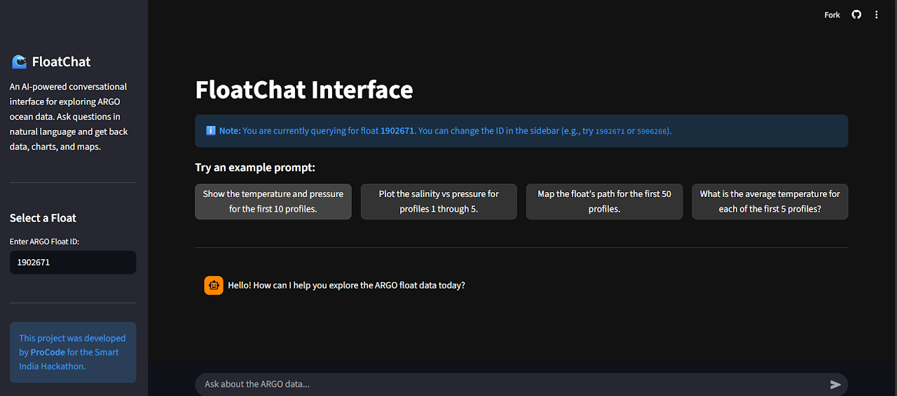

AI-powered chat interface for analyzing oceanographic data. Developed for Smart India Hackathon, FloatChat makes complex scientific datasets accessible through natural language queries.
FloatChat is an AI-powered application that makes oceanographic data analysis intuitive and accessible. Built during Smart India Hackathon, it combines the ARGO dataset (global ocean measurements) with advanced natural language processing. Instead of writing SQL queries, users ask questions in plain English, and the system intelligently generates appropriate database queries, visualizations, and insights for marine research.
FloatChat demonstrates advanced proficiency in full-stack AI development, combining advanced RAG techniques with practical oceanographic research applications. The project integrates spatial database queries (PostGIS), real-time LLM inference (Groq), vector similarity search (FAISS), and interactive data visualization. It showcases expertise in turning complex scientific challenges into intuitive, user-friendly solutions for Smart India Hackathon.
